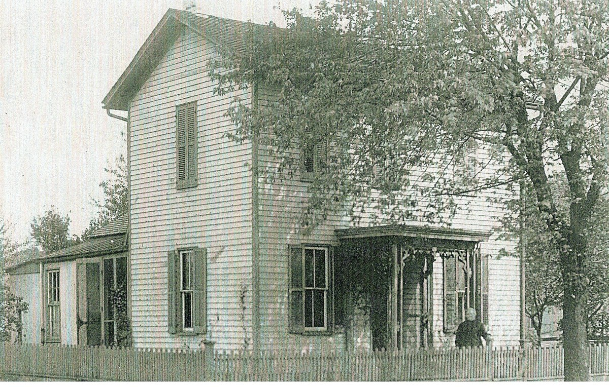
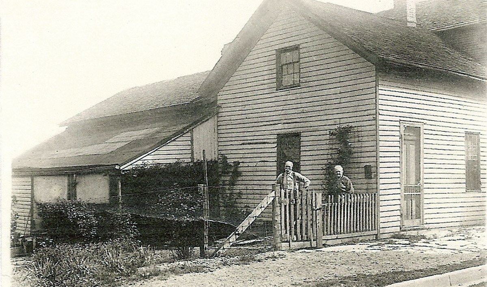

Goodpaster line · Warren County, Ohio; Cincinnati, Ohio
Profile status: SUPPORTED
Quick Facts
Born
3 December 1849, Rochester, Warren County, Ohio — or about 1845 UNPROVED (CONFLICT: the Ohio death certificate, son Thos B. Rich informant, says 3 December 1849; the 1850 census (age 5) and the 1860 census (age 15) both say about 1845, as do Geni (c.1845) and WikiTree (abt 1845); and the 10 December 1866 marriage license swears Barbara was “more than 18” — born before December 1848, which rules out 1849. Three records sit on the about-1845 side against the death certificate alone. No birth record has been found)
Died
21 May 1926, 2710 Oakley Avenue, Pleasant Ridge, Cincinnati DOCUMENTED (Ohio death certificate, Cert. 032933: died at 6 p.m., age 76 years 5 months 18 days, of pneumonia; the Cincinnati Enquirer obituary, 22 May 1926, p. 17, col. 1, says 12:15 p.m. — the time conflicts. Funeral at Ihlendorf’s, Main and Monroe avenues, Norwood, Monday 24 May at 2 p.m.)
Married
Thomas Benjamin Rich, 8 January 1867, Warren County, Ohio DOCUMENTED (Warren County marriage register, pp. 659–660: license sworn 10 December 1866; “MARRIED on the 8th day of January A. D. 1867, Thomas B. Rich and Miss Barbara Goodpaster.” The WCGS brides index, p. 36, agrees)
Occupation
Keeping house SUPPORTED (1870 census: “Keep house”)
Military
No military service is recorded in the research folder
Buried
Spring Grove Cemetery, Cincinnati, 24 May 1926 DOCUMENTED (death certificate + obituary; Find a Grave memorial 224130332)
Religion
No church affiliation found SUPPORTED (confirmed negative — no church affiliation in the research folder)
Immediate Family
Parents
James J. Goodpaster × Margaret Windsor SUPPORTED
Barbara’s place as their daughter rests on the 1850 Salem Township household (Barbara, 5) and the 1860 Harlan Township household (Barbara, 15, in James and Margaret’s household) — supported at about 95%, one document short of ironclad: no record explicitly names Barbara as their daughter, and no probate heir list has been found. BUT her Ohio death certificate names her father “John Goodpaster”, born Virginia, mother Unknown, born Virginia — which fits neither James John (born Ohio about 1809) nor the elder John (born Kentucky). The reading that the informant shortened “James John” is now weak. The counter-record is carried honestly in Research Notes.
Spouse
Thomas Benjamin Rich (born 14 July 1830, Symmes Township; died 11 March 1892, Cincinnati), married 8 January 1867, Warren County, Ohio DOCUMENTED
Warren County marriage register, pp. 659–660: license sworn 10 December 1866; married 8 January 1867. The WCGS brides index, p. 36, agrees.
Children
George V. Rich (born about December 1867; died August 1892, Cincinnati) DOCUMENTED James Bernard Rich (born 26 April 1872, Loveland; died 6 June 1949, Cincinnati; married Ida Mae Clark) DOCUMENTED Thomas Berry Rich (10 August 1874 – 8 March 1961) SUPPORTED
George V. is the eldest son — his Cincinnati Enquirer obituary (5 August 1892) names him “eldest son of the late Thomas B. and Barbara Rich” and gives his death at 174 Plum St., of peritonitis, aged 24 years and 8 months, interment at Miamiville Cemetery, Friday 5 August 1892. James Bernard is the direct line: born 26 April 1872, Loveland (birth record names parents Thomas B. Rick × Barbara Goodpaster); died 6 June 1949, Jewish Hospital, Cincinnati (Ohio death certificate, File No. 36689); buried Highland Cemetery, Fort Thomas Pike. Thomas Berry Rich (10 August 1874 – 8 March 1961) is known from his bronze marker (“FATHER / THOMAS B. RICH, SR.”, Find a Grave memorial 160850130) and FamilySearch 9V83-26H; burial Evendale. He is the “Thomas Berry Rich” — the name belongs to the son, not the father. Geni’s “Lelila Rich (1883–1933)” is unsourced and appears in no census — likely user error, not a daughter. Geni calls George and Thomas Berry James’s “half brothers” because Thomas is not linked as their father on Geni — a linkage artifact, not a second family.
Siblings
Lucinda Goodpaster (about 1836–1922), George Goodpaster (about 1838–1931), Harvey S. Goodpaster (about 1840–1916), Anna Goodpaster (about 1852–1901) SUPPORTED
Barbara’s brothers and sisters in the James J. Goodpaster × Margaret Windsor household — years from FamilySearch. None has a profile page yet, so no names are linked here. Harrietta, 5, appears in the 1860 household and is not traced beyond 1860 — she is not carried on this card pending identification; she may be the Marritta Shaller, 15, in the 1870 Morrow household (unproved). Amanda Goodpaster, married December 1866 (Warren County register, p. 660), is a possible relative, not carried as a sibling.
about 1845 · age 0
Born, Warren County, Ohio UNPROVED (1850 census age 5; 1860 census age 15; the death certificate says 3 December 1849 — conflict; see Research Notes)
1850 · age about 5
In the household of James Goodpaster × Margaret, Salem Township, Warren County SUPPORTED (FS index MX78-5P1: Barbara, 5, Ohio; the household holds two Barbarys — 60, born Virginia, and 5, born Ohio — and an elder John, 63, born Kentucky; an extended household)
15 June 1860 · age about 15
In the household of James Goodpaster × Margaret, Harlan Township, Warren County DOCUMENTED (1860 census, dwelling 62, family 62: James, 51, carpenter; Margaret, 47; George, 22; Barbara, 15, attended school; Anna, 8; Lucinda, 20; Harrietta, 5)
8 January 1867 · age about 21
Married Thomas B. Rich, Warren County DOCUMENTED (marriage register, pp. 659–660; license sworn 10 December 1866)
1880 · age about 35
Wife of Thomas Rich, Symmes Township, Hamilton County DOCUMENTED (1880 census, ED 106, sheet 577-A: Barbara, 35, Ohio; children George, 13; Bernard, 9; Thomas, 6)
11 March 1892
Husband Thomas died, 174 Plum Street, Cincinnati DOCUMENTED (Cincinnati Enquirer obituary, 13 March 1892, p. 5, col. 2)
August 1892
Eldest son George died, 174 Plum Street DOCUMENTED (Cincinnati Enquirer obituary, 5 August 1892, p. 5, col. 8)
21 May 1926
Died, 2710 Oakley Avenue, Pleasant Ridge, Cincinnati DOCUMENTED (Ohio death certificate, Cert. 032933, + Cincinnati Enquirer obituary, 22 May 1926, p. 17, col. 1)
24 May 1926
Buried, Spring Grove Cemetery, Cincinnati DOCUMENTED (death certificate + obituary; Find a Grave memorial 224130332)
Life Story
Barbara Goodpaster was born in Warren County, Ohio — about 1845 by the censuses, or 3 December 1849 by her death certificate, and the two do not reconcile. She was the daughter of James J. Goodpaster, a carpenter, and Margaret Windsor, of Roachester (Rochester), Salem Township. In 1850 she was 5, in a crowded household at Salem Township that held two Barbarys — a 60-year-old born in Virginia and Barbara herself, 5, born in Ohio — and an elder John Goodpaster, 63, born in Kentucky. In 1860 she was 15, at school, in her parents’ household at Harlan Township. On 8 January 1867 she married Thomas B. Rich in Warren County, and they had three sons: George, James Bernard, and Thomas Berry. She kept house while Thomas worked the railroad, and in 1880 the family was at Symmes Township, Hamilton County — Thomas 49, conductor; Barbara 35; George 13, Bernard 9, Thomas 6.
Her face survives: a Skenes studio portrait, circa 1895, taken in Cincinnati, shows her in a dark dress with a long chain, her hand on a chair. The Find a Grave contributor captioned it as the daughter of James John Goodpaster and Margaret (Windsor) — the caption’s claim, not a record. Two more photographs, circa 1910, show her at her house in Cincinnati: in front of it, a small figure at the door, and in the backyard with a neighbor at the gate.

Barbara (Goodpaster) Rich in front of her house, circa 1910, Cincinnati, Hamilton Co., Ohio. She is the small figure at the front door.

Barbara (Goodpaster) Rich, right, with a neighbor, in the backyard of her house, circa 1910, Cincinnati, Hamilton Co., Ohio.
She was widowed on 11 March 1892, when Thomas died of consumption at 174 Plum Street, and five months later her eldest son George died at the same address, of peritonitis, aged 24. She lived on for thirty-four years as a widow, and died 21 May 1926 at the residence of her son Thomas B. Rich, 2710 Oakley Avenue, Pleasant Ridge, Cincinnati — the death certificate says 6 p.m., the newspaper says 12:15 p.m. — and was buried at Spring Grove Cemetery on 24 May 1926. The newspaper styled her “Barbara Smith-Rich”, which raises a possible second marriage to a Smith after Thomas’s death; nothing proves it, and it is carried here as an open question, not a finding.
Her parentage is the open question of this profile. The censuses place her in James J. and Margaret Goodpaster’s household, and the family carries her as their daughter at about 95% — but no record explicitly names Barbara as their daughter, and her own death certificate names her father “John Goodpaster”, born Virginia, her mother Unknown, born Virginia. That fits neither James John, born in Ohio about 1809, nor the elder John, born in Kentucky. The reading that the informant shortened “James John” is now weak, and the counter-record is carried honestly here. No portrait of her husband Thomas has been found.
Sources and Evidence
Ohio death certificate, Barbara Rich, Cert. 032933, File No. 3289, Reg. Dist. 494: born 3 Dec 1849, Rochester, Ohio; died 21 May 1926, Cincinnati, 6 p.m., age 76 years 5 months 18 days, of pneumonia; father John Goodpaster, born Virginia; mother Unknown, born Virginia; informant Thos B. Rich, 2710 Oakley Ave.; buried Spring Grove Cem., 24 May 1926 DOCUMENTED (certificate image read; FS index ark 1:1:X6CK-R3K misreads “Oakleaf” for Oakley and “Shining Gove” for Spring Grove)
Cincinnati Enquirer, 22 May 1926, p. 17, col. 1: “SMITH-RICH — Barbara Smith-Rich, Friday, May 21, 1926, at 12:15 p.m., at residence of her son, Thomas B. Rich, 2710 Oakley av., Pleasant Ridge, Cincinnati. Funeral services Monday, May 24, at 2 p.m., at Ihlendorf’s funeral home, Main and Monroe avs., Norwood. Interment Spring Grove Cemetery.” DOCUMENTED (clipping read; the 12:15 p.m. conflicts with the certificate’s 6 p.m.)
Warren County, Ohio, marriage register, pp. 659–660: license sworn 10 December 1866 (Thomas B. Rich, more than 21, no lawful wife living; Barbara Goodpaster, more than 18, resident of Warren County); “MARRIED on the 8th day of January A. D. 1867, Thomas B. Rich and Miss Barbara Goodpaster” DOCUMENTED (register image read; WCGS brides index 1861–1867, p. 36, agrees)
United States census 1850, Salem Township, Warren County (FS ark 1:1:MX78-5P1, House 1469, Household 1470): James Goodpasters, 41, Ohio; Margaret, 34, Virginia; Barbary, 60, Virginia; Lucinda, 14; George, 12; Barbary, 5, Ohio; John, 63, Kentucky; Jonas, 24; John, 19; Henry, 10 SUPPORTED (index read live; the household holds two Barbarys — ours is the 5-year-old; MX78-5P1 is the census record’s ark ID, not a person ID)
United States census 1860, Harlan Township, Warren County (dwelling 62, family 62, 15 June 1860, PO Morrow): James Goodpaster, 51, carpenter, Ohio; Margaret, 47, Virginia; George, 22, carpenter; Barbara, 15, attended school; Anna, 8; Lucinda, 20; Harrietta, 5 DOCUMENTED (image read; NOT Salem Township — the research file is misnamed)
United States census 1870, Morrow, Warren County (dwelling 284, family 303): James, 61, journeyman carpenter, Ohio; Margaret, 54, Virginia; Anna, 18; Marritta Shaller, 15 DOCUMENTED (image read; Barbara absent — married 1867)
United States census 1880, Symmes Township, Hamilton County (ED 106, sheet 577-A, line 8; FS ark 33S7-9YB5-S5G, image 517 of 785): Thomas Rich, 49, R.R. Conductor, Ohio; Barbara, 35; George, 13; Bernard, 9; Thomas, 6 DOCUMENTED (image read)
WCGS brides index M–Z 1803–1834: “WINDSOR, Margaret | GOODPASTER, James J. | 1832 | 432” SUPPORTED (index only; 14 vs 30 Aug 1832 unresolved — likely license vs return)
Studio portrait, Skenes, 222 W. Fifth St., Cincinnati / 510 Madison Ave., Covington, Ky., circa 1895, captioned (Find a Grave contributor’s caption) “Barbara (Goodpaster) Rich (1849-1926) daughter of James John Goodpaster and Margaret (Windsor) of Roachester, Warren Co. Ohio, wife of Thomas B. Rich of Cincinnati, Hamilton Co. Ohio” SUPPORTED (the portrait is Barbara’s; the caption’s parentage and 1849 date are the contributor’s claims, not records)
House photographs, circa 1910, Cincinnati (Find a Grave): Barbara in front of her house; Barbara with a neighbor in the backyard of her house SUPPORTED (the photographs show Barbara at her house; the “circa 1910” dating and identifications are the contributor’s captions)
Find a Grave memorial 224130332, Spring Grove Cemetery, Cincinnati: b. 3 Dec 1849, Roachester — d. 21 May 1926 (76); family links: parents James J. Goodpaster 1809–1880 and Margaret Windsor Goodpaster 1816–1879; spouse Thomas Berry (or Thomas Benjamin) Rich 1830–1892; children George V. Rich 1867–1892, James Bernard Rich 1872–1949, Thomas Berry Rich Jr 1874–1961 SUPPORTED (memorial + the portrait, house photos, death certificate and obituaries carried on it)
Geni profile, read live 6 November 2026: Barbara Rich (Goodpaster), 6000000154398994838, b. c.1845 Ohio; daughter of James Goodpaster and Margaret Goodpaster; mother of George Rich, Thomas Berry Rich and James Bernard Rich; sister of Lucinda Shaler, George Washington Goodpaster, Anna Goodpaster and Harvey S Goodpaster; SOURCES: NONE attached SUPPORTED
FamilySearch 2WN2-KD3, read live 6 November 2026: 3 Dec 1849, Roachester, Salem Twp, Warren — 21 May 1926, Cincinnati; burial 24 May 1926; AKA Barbary Goodpasture; parents James John Goodpasture 1809–1880 × Margaret Windser 1816–1879, m. Aug 1832, Lebanon; siblings Lucinda 1836–1922, George 1838–1931, Harvey S 1840–1916, Anna A 1852–1901; 20 sources SUPPORTED (the 1860 census is still only SUGGESTED on this profile, and a 1949 “Barbara Goodpaster, Ohio Deaths” entry is wrongly attached — see Research Notes)
WikiTree Goodpaster-327, “Barbary Goodpaster”, b. abt 1845 [uncertain], Ohio; daughter of James J. and Margaret (Windsor); sister of Lucinda, George and Anna (Goodpaster) Allen; NO spouse, NO children; sole source the 1850 census MX78-5P1 SUPPORTED
Ancestry, Brewster Family Tree (tree 212654536), person 162810160164, read live 6 November 2026: Birth 1879, Death 1948, Indiana — both WRONG (1849–1926, Cincinnati); parents James J. Goodpaster 1809– and Margaret Windsor 1813–; no sources, no photos, Hints tab empty SUPPORTED (as evidence of the error, not of the dates)
Tricia’s Ancestry tree (“Tricia’s Shamblen/McKinney Family Tree”, tree 44342901), searched signed in 6 November 2026: the couple is NOT in the tree SUPPORTED (genuine negative; Brewster-side couple, nothing to harvest); Findmypast — not checked for this couple in the pull, no tile; MyHeritage — the Rich line lives on Geni, integrated with MyHeritage; no Thomas Rich or Sarah Rich in the MyHeritage tree (searched, not found), no tile
Grades: DOCUMENTED an original record says it · SUPPORTED several records point to it · FAMILY ACCOUNT the family’s own telling · UNPROVED a lead, not proved.
Research Notes and Open Questions
Grades on this page: DOCUMENTED means an original record was read; SUPPORTED means a claim attested by filed research — the census images, the register image, the newspaper clippings, the signed-in tree checks — but not by a register read here; UNPROVED means a claim carried from the research folder with no corroboration found.
Birth conflict: the death certificate (son Thos B. Rich informant) says 3 December 1849, Rochester, Warren County; the 1850 census (age 5) and the 1860 census (age 15) both say about 1845, as do Geni (c.1845) and WikiTree (abt 1845); and the 10 December 1866 marriage license swears Barbara was “more than 18” — born before December 1848, which rules out 1849. Three records sit on the about-1845 side against the death certificate alone. Neither year is adopted as settled here; the hero line carries “about 1845” as the leading side, hedged. No birth record has been found.
Parentage: James J. Goodpaster × Margaret Windsor are Barbara’s parents at about 95% — the 1850 and 1860 household images and the Windsor marriage index — one document short of ironclad: no record explicitly names Barbara as their daughter, and no probate heir list has been found. The counter-record is direct: her Ohio death certificate names her father “John Goodpaster”, born Virginia, mother Unknown, born Virginia — which fits neither James John (born Ohio about 1809) nor the elder John (born Kentucky). The reading that the informant shortened “James John” is now weak. The parentage is carried as SUPPORTED with the counter-record stated, not as settled. James J. Goodpaster’s 1880 Warren estate (heirs could name Barbara) is the open decider.
Margaret’s maiden name: Windsor is settled at index level (WCGS brides M–Z 1803–1834). The name appears as Windsor, Windson, Mindson, and Minerson in the August 1832 indexes; “Windser” appears in NO record, though FamilySearch spells it Windser — flag the variance. Margaret’s parents (Thomas Windsor × Lydia) are cold.
The two Barbarys: the 1850 household (FS ark 1:1:MX78-5P1) holds TWO Barbarys — 60, born Virginia, and 5, born Ohio. Ours is the 5-year-old. The household also holds an elder John, 63, born Kentucky — an extended, multi-family household and an index trap. MX78-5P1 is the census record’s ark ID, not a person ID (person MX78-5P1 is Joseph Kehrli — do not link it).
Harlan, not Salem: the 1860 household is in Harlan Township, Warren County (PO Morrow) — the research report’s “Butlerville, Salem Township” is wrong, and the file goodpaster-1860-salem-twp-warren-co-n320.jpg is misnamed. The 1850 household IS Salem Township.
“James John”: the records read so far give only James / James J. — “John” appears only on Barbara’s death certificate, now read. The Each Generation page writes “James John Goodpaster” at Gen VI — the page’s form stands for the roster; the record-level name stays open. Do NOT introduce a distinct John Goodpaster as Barbara’s father.
“Smith-Rich”: the Enquirer obituary (22 May 1926) styles her “Barbara Smith-Rich”, and FamilySearch shows “Person May Have Another Spouse” on her profile — a possible second marriage to a Smith after Thomas’s death. It is an open question, not a finding.
“Berry” resolved: NO record calls the father “Thomas Berry Rich” — the name belongs to the SON, Thomas Berry Rich (b. 1874), and to the mother’s supposed maiden name, Sarah W. Berry (unproved). Barbara’s husband is carried as Thomas Benjamin Rich, the tree form, with the middle initial B. unresolved.
Ancestry wrong dates: tree 212654536 shows Barbara “b. 1879, d. 1948, Indiana” and Thomas “b. 1872, d. 1949” — James Bernard’s and Ida Mae Clark’s dates, not theirs. Both were re-verified live 6 November 2026 and are unchanged. Do not adopt them.
FamilySearch wrong attachments (flagged, not fixed): a 1949 “Barbara Goodpaster, Ohio Deaths” entry is attached to Barbara’s profile although she died in 1926; the 1860 census naming “James, Margaret, George, Barbara, & Anna Goodpaster and Lucinda & Marrietta Shaler” is still only SUGGESTED on her profile, not attached, despite the image having been read.
Harrietta and Marritta: Harrietta, 5, in the 1860 household is not traced beyond 1860 and is not carried on the Siblings card pending identification — she may be the Marritta Shaller, 15, in the 1870 Morrow household (unproved). Amanda Goodpaster, married December 1866 (Warren County register, p. 660, No. 1307), is a possible relative, not carried as a sibling.
The 1861 Devonshire Sarah Rich match (her mother-in-law’s record): MyHeritage/Geni still show CONFIRMED a “Sarah Rich, b. c.1808, Otterton, Devonshire, residence 1861, 3 Cliff Street, Budleigh Salterton, East Budleigh, Devonshire, England, husband John Rich, lace maker” — the WRONG Sarah, a namesake; our Sarah was born in Ohio about 1808, was in Symmes in 1850, and was absent by 1860. The same 1861 source is also on John B Rich’s Geni profile, and Geni shows it as “Adds occupation” — the Devonshire lace-maker occupation has been added to our Sarah’s profile data. Nothing was confirmed, undone, or changed by us; the confirmation stands until it is undone. The 1850 census match (Symmes, Family 107) IS ours and is correctly confirmed.
No lore: no family tale, anecdote, or oral history is attached to Thomas, Barbara, or James Bernard (09-29/30 lore sweep). No ship — both spouses were Ohio-born. No portrait of Thomas has been found; Barbara’s Skenes portrait (circa 1895) and her two circa-1910 house photographs survive.
Paid items (notes only, never purchased): CCGS Marriages 1850–1874 print, $29.99 + shipping; WCGS Index to 1882 Beers History (paid). Both live in the couple’s Books & Sources folder as notes only.
Open: James J. Goodpaster’s 1880 Warren estate (heirs could name Barbara); the 1900 census for Barbara (searched — 2,856 results, first 100 scanned — no 1900 census hit; son Thos B Rich appears in the 1900 Cincinnati city directory, FS ark 1:1:683Y-RRPB); Warren County death books 1867–1908 (FS catalog 679996 — the film number does not resolve in the current catalog; matters little, both spouses died outside Warren County); Hamilton County probate death records 1881–1908 (not located); Anna Allen’s 1901 death record (FS F66F-6R4, father “Jas. J. Goodpastor” — unviewed).
Tree checks, signed in 6 November 2026: Geni (SOURCES: NONE attached); FamilySearch (2WN2-KD3; 20 sources); WikiTree (Goodpaster-327; sole source the 1850 census); Ancestry (162810160164; wrong dates, no sources, Hints empty); Find a Grave (224130332; the portrait, house photos, death certificate and obituaries); Findmypast — not checked for this couple, no tile; Tricia’s Ancestry tree — absent; MyHeritage — no Rich profiles in the tree.
Profile history: Created 6 November 2026 from the family couple profile and research notes.